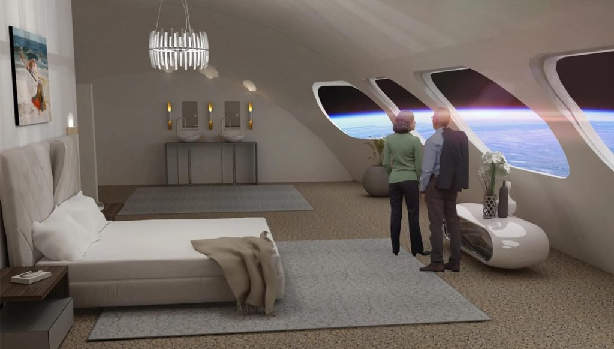
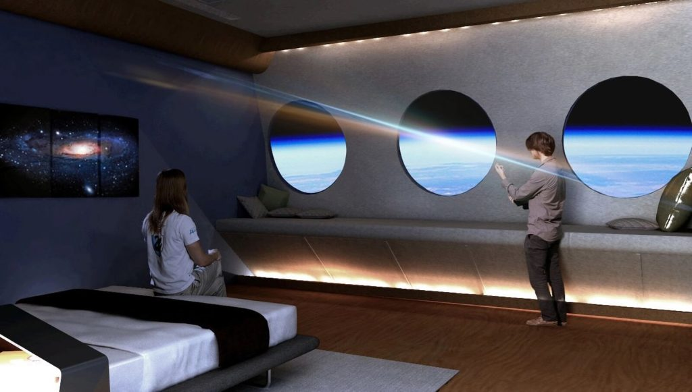

လွန်ခဲ့တဲ့ နှစ်အနည်းငယ် အတွင်းမှာ အာကာသ ခရီးသွား လုပ်ငန်းဟာ တဖြည်းဖြည်းနဲ့ စီးပွားဖြစ် လုပ်ငန်း တခုအဖြစ် စတင် ပေါ်ထွန်း လာခဲ့ပါတယ်။ သိပ်မကြာမီ လပိုင်းအတွင်းကပဲ အမေဇုန် သဌေးကြီးဟာ အာကာသ ထဲကို မိနစ် အနည်းငယ် ကြာအောင် လေ့လာရေး ခရီး ထွက်ခဲ့ပါ သေးတယ်။ သိပ်မကြာမီ အချိန်မှာ အာကာသ ထဲကို ရက်ပိုင်း သွားရောက်တဲ့ အာကာသ ခရီးသွား လုပ်ငန်းတွေ ပေါ်ပေါက် လာကြတော့မယ်လို့လဲ အများက ယုံကြည် နေကြပါတယ်။
ဒီလို အခြေအနေမှာ အမေရိကန် ပြည်ထောင်စုမှာ အခြေစိုက်တဲ့ Orbital Assembly Corporation ကနေ ၂၀၂၇ အမှီ အာကာသ ဟိုတယ် တစ်ခု ဖွင့်လှစ် သွားနိုင်ဖို့ ကြိုးစား နေပါတယ်။
Voyager Station လို့ အမည်ပေး ထားတဲ့ ဒီ အာကာသ ဟိုတယ်ဟာ အဆင့်မြင့် ဇိမ်ခံ အာကာသ ဟိုတယ် တခု ဖြစ်လာမယ်လို့ ဆိုပါတယ်။ ဒီ ဟိုတယ်ဟာ တည်းခိုသူ ဧည့်သည် ၂၈၀ နဲ့ ဟိုတယ် ဝန်ထမ်း ၁၁၂ ဦးတို့ နေထိုင်နိုင်အောင် ကြီးမားမယ် လို့လဲ သိရပါတယ်။

ဒါတွေက ပြောရရင်တော့ အတော်လေး အလှမ်း ဝေးနေသလိုပါပဲ။ ဒါပေမယ့် ကုမ္ပဏီရဲ့ ဒုတိယ သမ္မတ ဖြစ်သူ တင်မ် အလာတော (Tim Alatorre, OAC’s vice president) ကတော့ လူအများက ဒီလို အဆိုးမြင် တာကို နားလည်ပါတယ်လို့ ဆိုပါတယ်။ ဒါပေမယ့် သူကတော့ ဒီလို အာကာသ ဟိုတယ်တခုမှာ ခရီးသွား ဖို့ဆိုတာ သိပ်ကြာတော့မှာ မဟုတ်ဘူးလို့ ထောက်ပြပါတယ်။
“ဒါတွေက ပုံမှန်လို ဖြစ်လာ တော့မှာပါ။ ခင်ဗျား အဖေက အာကာသထဲ သွားလည်ခြင်မယ်၊ ခင်ဗျား အဖေကလဲ အာကာသထဲ သွားလယ်မယ်။ အာကာသထဲ သွားတယ် ဆိုတာ သိပ်ပြီး အထူးအဆန်း ဖြစ်တော့မှာ မဟုတ်ပါဘူး” လို့ သူက ပြောပါတယ်။
ဒီလို အကြံကြီး ပေမယ့်လဲ အခုထက် ထိတော့ ဒီ စီမံကိန်းက လေထဲ တိုက်အိမ် ဆောက်သလိုပဲ ဖြစ်နေပါသေးတယ်။ ဒါပေမယ့် ဒီ ဟိုတယ်ရဲ့ အိုင်ဒီယာ ကတော့ လက်တွေ့ ဖြစ်နိုင်တဲ့ အိုင်ဒီယာ တစ်ခု ဖြစ်ပါတယ်။
ဟိုတယ်ရဲ့ အခြေခံ ကတော့ လည်နေတဲ့ ဘီးကြီး တစ်ခုပဲ ဖြစ်ပါတယ်။ ဒီ အိုင်ဒီ ယာက အသစ်အဆန်းတော့ မဟုတ်ပါဘူး။ ၁၉၀၀ ခုနှစ် လောက်ကတဲက အင်ဂျင်နီယာတွေ အဆိုပြု ခဲ့ကြတဲ့ အိုင်ဒီယာပါ။

ပထမ စစချင်း မှာတော့ ကမ္ဘာပေါ်က ဆွဲအား အခြေအနေကို ရောက်ရှိအုံးမှာ မဟုတ်ပါဘူး။ စစချင်းမှာ ဒီ ဟိုတယ်ရဲ့ လည်ပတ်နှုန်းဟာ တစ်မိနစ်ကို တစ်ပတ်ခွဲလောက် အမြန်နှုန်းနဲ့ လည်ပတ်မှာ ဖြစ်ပါတယ်။ ဒီ လည်ပတ်နှုန်းဟာ ကမ္ဘာပေါ်က ဆွဲအားရဲ့ ၆ ပုံ ၁ ပုံလောက် ပမာဏ ရှိတဲ့ ဆွဲအားတုကို ဖြစ်ပေါ်စေမယ်လို့ သိရပါတယ်။ ဒါဟာ လပေါ်က ဆွဲအားနဲ့ အကြမ်းဖျင်း တူညီပါတယ်။
နောက်ပိုင်းမှာတော့ ဒီ ဟိုတယ်ရဲ့ လည်ပတ်နှုန်းကို မြှင့်တင်သွားပြီး မားစ် (အင်္ဂါဂြိုဟ်) ရဲ့ ဆွဲအားအထိ ရောက်ရှိ မြှင့်တင်သွားဖို့ ရည်ရွယ် ထားကြပါတယ်။ ကမ္ဘာ့ပေါ်က ဆွဲအား အခြေအနေမျိုး ဖန်တီးဖို့ ကတော့ အချိန် နည်းနည်း ယူရအုံးမယ်လို့ ဆိုပါတယ်။
ဒီလို တဖြည်းဖြည်း ဆွဲအား တု ကို မြှင့်တင်သွားရတဲ့ အဓိက အကြောင်းရင်း ကတော့ ဒီလို ဆွဲအားတု အခြေအနေမှာ လူတွေရဲ့ ခန္ဓာကိုယ်က ဘယ်လို တုန့်ပြန်မလဲ ဆိုတာနဲ့ ပတ်သက်တဲ့ သုတေသနတွေ သိပ်မရှိ သေးတာကြောင့် ဖြစ်ပါတယ်။ ဒါ့ကြောင့် အားနည်းတဲ့ ဆွဲအားတုကို အရင် ဖန်တီးပြီး တဖြည်းဖြည်း မြှင့်တင်သွားဖို့ စီမံတာာ ဖြစ်ပါတယ်။
ဒီ အာကာသ ဟိုတယ်ကို လာရောက်တဲ့ ဧည့်သည်တွေဟာ စက်ဝိုင်းကြီးရဲ့ အလယ် ဗဟိုမှာ ရှိတဲ့ ဆွဲအားမဲ့ ယာဉ်ရပ်နား စခန်းကနေ ဟိုတယ်ကို ဝင်ရောက် ကြရမှာ ဖြစ်ပါတယ်။ ဒီကနေမှ ဓါတ်လှေကား တွေနဲ့ လူနေထိုင်ရာ အပိုင်းကို သွားရောက်ကြမှာ ဖြစ်ပါတယ်။ ဒီ လူနေထိုင်ရာ အခန်းတွေကိုတော့ စက်ဝိုင်းကြီးရဲ့ ပတ်လည်မှာ တည်ဆောက်ထားမယ်လို့ ဆိုပါတယ်။
အခုထိတော့ ဒီ ဟိုတယ်ကို ၂၀၂၇ အမှီ ဖွင့်နိုင်ပါ့ မလား ဆိုတာ မေးခွန်း ထုတ်စရာ ဖြစ်နေပါ သေးတယ်။
Ref: The first ‘space hotel’ plans to open in 2027 | Astronomy